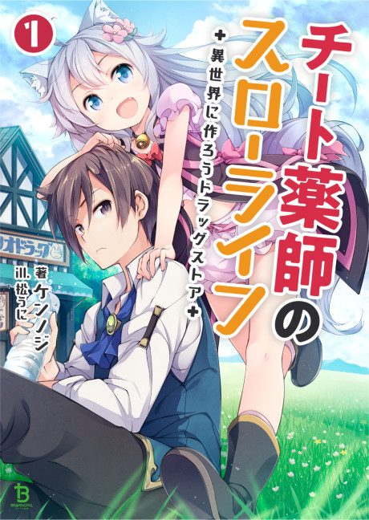

Drug Store in Another World - The Slow Life of a Cheat Pharmacist
チート薬師のスローライフ～異世界に作ろうドラッグストア～
An overworked office worker is sent to another world with the power to make any medicine, and opens a small pharmacy in a village.
We haven't found where the anime ends in the light novel yet.
6.1AniList score
—Animeter, no votes yet
12episodes
Rate it or report where you stopped
Is it worth pushing through?
Built from what visitors report across all 12 episodes.
Loading reports…Checking what other people said about this one.
Sign in above with your email to add your report.